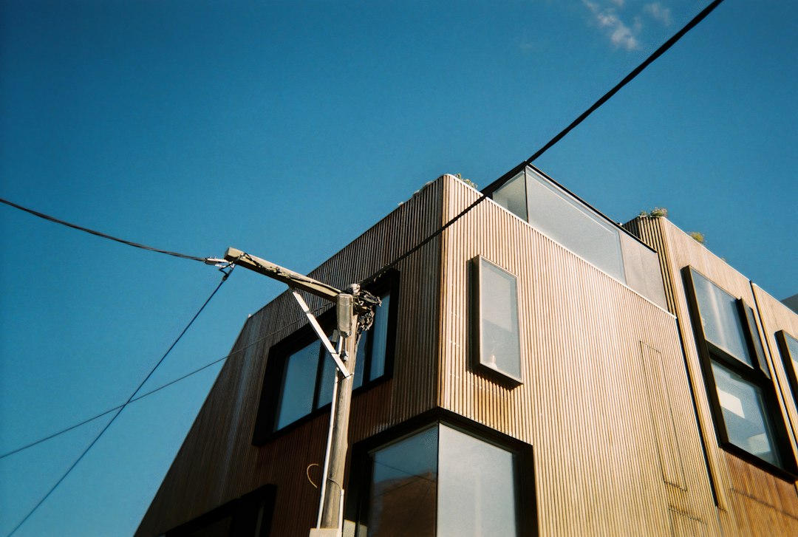

For a Melbourne kitchen project, the published guide puts most fully fitted renovations at $25,000 to $60,000, budget refreshes at $12,000 to $30,000, and premium work above $80,000. A mid-range full renovation is framed as roughly 6 to 12 weeks from contract signing to handover, with cabinetry and stone lead time before 2 to 4 weeks of site work. The useful next step is a measured in-home consult and a fixed-price written quote.
For homeowners comparing kitchen renovation melbourne options, the practical decision is how the scope, cabinetry, quote format and site timing line up before anyone commits to a build.
Kitchen Renovation Melbourne Explained
Melbourne Kitchen Reno publishes a practical model for planning a kitchen renovation melbourne project: start with the kitchen size, suburb, scope and rough budget, then use an in-home design consult to turn that brief into a fixed-price written quote. That sequence matters because the same room can price very differently once cabinetry, benchtops, plumbing, electrical work, splashback, hardware, demolition and installation are all included.
A useful scope separates cosmetic refreshes from full renovations. A refresh may keep the same layout and focus on door fronts, benchtops and splashback. A full renovation is broader, with new cabinetry, services updates, demolition and installation. Premium briefs may add natural stone, custom joinery or a butler's pantry, but the source page is clear that the exact figure comes from the renovator after inspection.
- Measure first: confirm walls, services, appliance positions and storage pinch points before choosing finishes.
- Price the full path: include design, manufacture, demolition, installation and finishing, not just visible materials.
- Ask what is fixed: compare written inclusions, exclusions and the variations process before signing.
Melbourne Homes Need Different Renovation Briefs
The strongest brief reflects the building type. The published service examples mention period terraces, Edwardians and bungalows where made-to-measure joinery may suit the home better than a flat-pack run. They also mention compact galley, single-wall and apartment kitchens, where storage, bench space and access constraints shape the design.
Apartment work needs a more document-aware conversation. The source page refers to owners corporation documentation, compact layouts and acoustic underlay, so a quote discussion should ask who prepares the paperwork, how deliveries are managed, and whether any floor or noise requirements affect the install. For inner-city homes, the right question is not just whether the design looks efficient, but whether the build method fits the building rules.
For readers still shaping the design brief, a related Melbourne kitchen design guide can help frame layout and storage questions before the renovation quote stage.
Cost Ranges and Quote Signals
The source guide gives clear indicative bands: $12,000 to $30,000 for many budget refreshes, $25,000 to $60,000 for most fully fitted Melbourne kitchen renovations, and more than $80,000 for premium work with natural stone, custom joinery and a butler's pantry. These are planning ranges only, not a substitute for a fixed-price written quote after a site visit.
Cost signals usually come from the choices hidden inside the brief. Keeping the layout may reduce service changes. Custom cabinetry can better suit period homes, but it should be specified clearly. Premium finishes may change lead times as well as price. Soft-close runners and hinges are described as common in quality renovations, so the quote should name the hardware brand and state whether it is included in the base price.
A fixed quote is more useful when it lists assumptions. Ask whether demolition, plumbing, electrical work, splashback, benchtops, cabinetry manufacture, appliance allowances and finishing are included. Also ask how variations are approved, priced and documented.
Timing, Lead Times and Site Work
The published timeline for a mid-range full renovation is roughly 6 to 12 weeks from contract signing to handover. Cabinetry and stone fabrication are described as a 4 to 6 week lead-in, site work is typically 2 to 4 weeks once cabinetry is on site, and finishing adds 1 to 2 weeks.
Those stages give a better planning framework than a single completion promise. The early weeks are often about manufacture and supply, while the disruptive period at home is concentrated around demolition, installation and finishing. If appliances, stone or cabinet details are unresolved, the front half of the program can move before anyone is ready for site work.
- Confirm the design and inclusions before contract signing.
- Ask when cabinetry, stone and appliance selections must be final.
- Check the planned start date for demolition separately from the manufacturing lead time.
- Keep a written record of any variation before it changes the price or schedule.
Who This Applies To
This guide is most relevant to Melbourne homeowners planning a kitchen refresh, full renovation, custom cabinetry project or small apartment kitchen. It also suits owners of period homes who need joinery that responds to the existing character, rather than a standard cabinet run.
It is less useful for someone seeking a simple product-only price, because the source guide is built around measured consults and written renovation quotes. A homeowner who already has architectural drawings can still use the same checklist, but should ask how the renovator prices build-only work, who coordinates trades, and how domestic building insurance is handled where the contract value requires it.
The safest comparison is between like-for-like written scopes. One quote may look cheaper because it excludes finishing, hardware, services work or owners corporation requirements. Another may look higher because it has already allowed for them.
- Define the brief. Write down the room size, must-have storage, layout changes, finish level and rough budget before requesting a consult.
- Use the consult well. Ask the renovator to measure, test layout options and identify any building-specific constraints that affect the quote.
- Compare inclusions. Read each written quote against the same list of cabinetry, benchtop, splashback, plumbing, electrical, demolition and finishing items.
- Check timing stages. Separate manufacturing lead time from site work so the disruption at home is easier to plan.
- Approve variations in writing. Before a change proceeds, ask for the cost and schedule effect to be recorded.
| Project type | Likely focus | Questions to ask |
|---|---|---|
| Budget refresh | Door fronts, benchtop and splashback with no layout change | Which existing elements stay, and what is excluded from the price? |
| Full renovation | Cabinetry, services updates, demolition, install and finishing | Is the quote fixed-price and does it list all trade work? |
| Apartment kitchen | Compact layout, access, storage and documentation | Who handles owners corporation requirements and acoustic details? |
| Premium custom work | Natural stone, custom joinery and possible butler's pantry | Which materials drive cost and lead time? |
Common questions
How much should I budget for a Melbourne kitchen renovation? The source guide gives $25,000 to $60,000 as the common fully fitted range, $12,000 to $30,000 for many budget refreshes, and above $80,000 for premium projects. Treat those as planning figures until a renovator gives a fixed-price written quote.
How long will the work take? For a mid-range full renovation, the published guide suggests roughly 6 to 12 weeks from contract signing to handover. Site work is typically 2 to 4 weeks once cabinetry is on site.
Are apartment kitchens handled differently? Yes. The source page points to owners corporation documentation, compact layouts, acoustic underlay and storage planning as relevant apartment issues, so those should be discussed before quote approval.
What should be included in a quote? Ask for cabinetry, benchtops, splashback, demolition, plumbing, electrical work, hardware, installation, exclusions and the variations process to be set out in writing.
This guide covers planning, cost ranges, quote checks and timing for Melbourne kitchen renovation projects using the supplied source material.